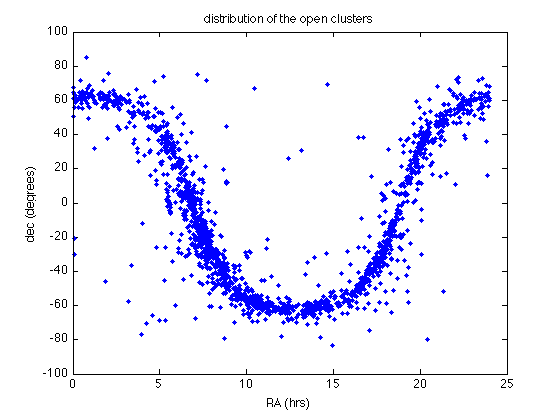
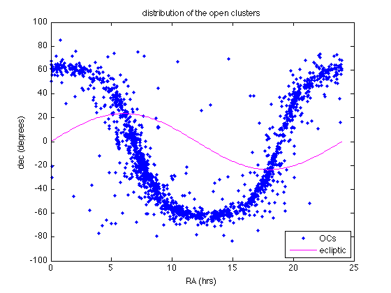

Distribution of the open clusters
This is a reference for you to see if you did everything correctly, what should be on your screen. Note that some commands in this page are blocked (using ...) for you to figure out by yourself.
Contents
Read and Organize the data
Let us plot the survey of open clusters in equatorial coordinates, namely right ascension (in hours) and declination (in degrees) above or below the equatorial plane. Note that, while the data source with the full data is listed in the lab handout, the numerical values needed here have been compiled into a simplified table found in clusters_relevant.txt.
First, we have to load the data:
load clusters_relevant.txt
and save the data to a matrix variable, e.g., cr:
cr = clusters_relevant;
In this table the first, second, and third columns contain the RA in hours, minutes, and seconds. These values must be combined into a single decimal value of hours:
RA = cr(:,1) + cr(:,2)/60 + cr(:,3)/3600;
The same goes for the declination, though it is given by degrees, arcmin, and arcsec in the fourth, fifth, and sixth columns respectively:
dec = cr(:,4) + (cr(:,5)/60 + cr(:,6)/3600).*cr(:,4)./abs(cr(:,4));
Note that the cr/abs(cr) term simply insures the sign carried by the fourth column value is carried over to the other two values added, as they will have matching sign.
Make the plot
Now let's plot the open clusters in RA vs dec, i.e. equatorial coordinates.
figure(1); clf plot(RA,dec,'b.') xlabel('RA (hrs)') ylabel('dec (degrees)')
Bonus track
We can also plot, with a red circle, the location of the galactic center in order to get a feel for how open clusters are distributed in the galactic plane:
hold on gal = [17 + 45/60. + 40.04/3600, -29 - 28.1/3600]; plot(gal(1),gal(2),'ro', 'LineWidth', 3, 'MarkerSize', 10)
Since the equatorial plane is tilted with respect to the galactic plane, the clusters, which gather mostly in the galactic plane, follow a sinusoidal curve on this plot.